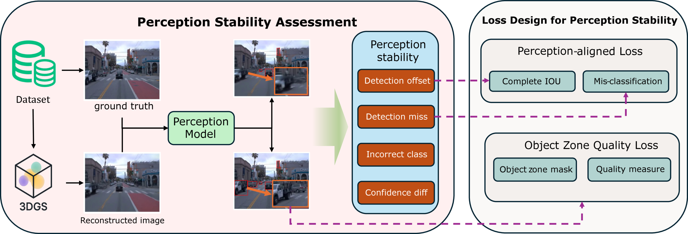
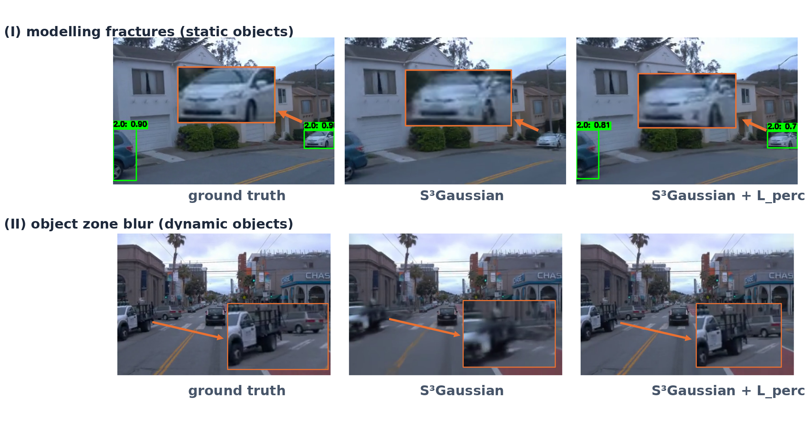

Beyond Visual Reconstruction Quality: Object Perception-aware 3D Gaussian Splatting for Autonomous Driving
Abstract
Reconstruction techniques, such as 3D Gaussian Splatting (3DGS), are increasingly used to generate scenarios for autonomous driving system (ADS) research. Existing 3DGS-based approaches for autonomous-driving scenario generation have, through various optimizations, achieved high visual similarity in reconstructed scenes. However, this route is built on a strong assumption: that higher scene similarity directly translates into better preservation of ADS behaviour. Unfortunately, this assumption has not been effectively validated, and ADS behaviour is more closely related to objects within the field of view rather than the global image. Thus, we focus on the perception module—the entry point of ADS. Preliminary experiments reveal that although current methods can produce reconstructions with high overall similarity, they often fail to ensure that the perception module outputs remain consistent with those obtained from the original images. Such a limitation can significantly harm the applicability of reconstruction in the ADS domain. To address this gap, we propose two complementary solutions: a perception-aligned loss, which directly leverages output differences between reconstructed and ground-truth images during training; and an object zone quality loss, which specifically reinforces training on object locations identified by the perception model on ground-truth images. Experiments demonstrate that both of our methods improve the ability of reconstructed scenes to maintain consistency between the perception module outputs and the ground-truth inputs.
Preliminary Study: Visual Quality Does Not Guarantee Perception Stability
Mainstream street-scene reconstruction methods (e.g., S3Gaussian, OmniRe, EMD) optimize global image metrics such as SSIM, PSNR, and LPIPS, implicitly assuming that higher scene similarity directly translates into better preservation of ADS behaviour. We challenge this assumption from the perspective of the perception module—the entry point of every ADS.
We evaluate three state-of-the-art 3DGS approaches (S3Gaussian, OmniRe, and EMD built upon each base) with three detection models of different architectures (YOLOv8, Faster R-CNN, RT-DETR), measuring perception stability via mean IoU (detection differences), mAP@[0.5:0.95] (confidence and misclassification), and the number of missed detections. Although existing methods achieve high visual scores, their perception stability is far from satisfactory, and higher visual quality does not consistently translate into higher perception stability. The statistical correlation between pixel-level metrics and detection stability, though significant (p < 5×10-3), remains weak (Pearson r ≈ 0.3–0.6) and far from predictive.
Moreover, even with ground-truth inputs, perception modules can make errors. It is therefore not enough to reproduce only the correctly recognized objects—we also need to reproduce the errors that already exist, since the goal of reconstruction in ADS is to efficiently reveal the limitations of ADS perception for more effective system testing and improvement.
Methodology: Perception-aware 3DGS

Overview of this work. Perception stability is measured by comparing the outputs of the same perception model when fed with the original frames versus the reconstructed frames. Based on the perception outputs and the object regions identified by the perception model, we design a perception-aligned loss and an object zone quality loss.
Formally, we formulate perception-aware reconstruction as a constrained optimization: preserve reconstruction quality while minimizing the perception discrepancy between the reconstruction R(x) and the ground truth x:
minR Ex[ dperc(P(R(x)), P(x)) ] s.t. Ex[ dimg(R(x), x) ] ≤ ε
Method 1 — Perception-aligned Loss. A frozen perception model P (YOLOv8) runs on both the ground-truth frame and the rendered frame; training penalizes the discrepancy between P(R(x)) and P(x), combining a CIoU-based bounding-box term (penalizing overlap, center-point distance, and aspect-ratio deviations) with a classification term that penalizes label mismatches:
Lperc = Σi ( λbox · Lbox(B(x), B(R(x))) + λcls · Lcls(C(x), C(R(x))) )
The loss is integrated into the 3DGS training objective (applied in the fine-stage), and gradients flow only to the Gaussians—the perception model is never updated. The reference is P(x) rather than dataset labels: if the detector misses an object in the original frame, the ideal reconstruction reproduces that error, which is aligned with the goal of exposing perception flaws in ADS testing.
Method 2 — Object Zone Quality Loss. Studying failure cases, we observe two typical phenomena in existing reconstructions: modelling fractures (discontinuities in static object regions) and object zone blur (blurring in dynamic object regions). Both point to the low reconstruction quality of object zones, which occupy only a small area compared to the sky or buildings. Using offline ground-truth perception results as masks, the object zone quality loss computes a visual similarity loss only within the object zones:
Lobj-vis = dvis( R(x) ⊙ B(x), x ⊙ B(x) )
Because it relies solely on offline GT perception outputs, this approach avoids per-iteration detector inference and has negligible impact on training time compared to Method 1, while focusing the model on edges and textures critical for perception.
Both objectives are plug-and-play: they integrate with existing 3DGS-based driving pipelines including S3Gaussian, OmniRe, and EMD-based settings, and are enabled with a single command-line flag:
# Method 1: Perception-aligned loss
python train.py -s {SCENE_DATA_INFO} --port 6017 --expname "waymo" \
--model_path {MODEL_PATH} --use_obj_loss
# Method 2: Object zone quality loss
python train.py -s {SCENE_DATA_INFO} --port 6017 --expname "waymo" \
--model_path {MODEL_PATH} --use_perception_metricExperimental Results

Comparison of reconstructed frames for S3Gaussian: the perception model fails to maintain original outputs, whereas integrating the perception-aligned loss leads to improved perception consistency. (I) modelling fractures; (II) object zone blur.
Experiments on the Waymo dataset show that both of our methods significantly improve the perception stability of 3DGS reconstructions across all base approaches:
- Perception stability: mAP and mean IoU improve across all bases, with missed detections reduced to zero in most configurations.
- Black-box generalization: the same trend is observed on unseen detectors (Faster R-CNN, RT-DETR) besides the YOLOv8 used during training, indicating a genuine enhancement of reconstruction quality rather than overfitting to the training detector.
- Visual quality preserved: global SSIM fluctuates by less than ±1%, while object-zone SSIM clearly improves—the object zone quality loss even benefits overall visual quality.
- Combining both losses yields the best results in most cases.
Main Results (YOLOv8)
Perception-aligned loss (Lperc) and object zone quality loss (Lobj-vis) integrated into four base approaches. All loss weights set to 1. Results are averages across all scenes.
| Method | SSIM ↑ | Obj SSIM ↑ | PSNR ↑ | LPIPS ↓ | mAP ↑ | mean IoU ↑ | Miss ↓ |
|---|---|---|---|---|---|---|---|
| S3Gaussian | 0.924 | 0.877 | 31.27 | 0.106 | 0.550 | 0.803 | 1.5 |
| + Lperc | 0.920 | 0.897 | 31.53 | 0.106 | 0.593 | 0.840 | 0.83 |
| + Lobj-vis | 0.937 | 0.921 | 31.89 | 0.082 | 0.672 | 0.862 | 0.4 |
| + both | 0.941 | 0.924 | 32.00 | 0.083 | 0.700 | 0.872 | 0.0 |
| OmniRe | 0.953 | 0.867 | 33.77 | 0.049 | 0.489 | 0.832 | 0.0 |
| + Lperc | 0.954 | 0.876 | 33.75 | 0.048 | 0.507 | 0.845 | 0.0 |
| + Lobj-vis | 0.949 | 0.893 | 33.25 | 0.046 | 0.545 | 0.856 | 0.0 |
| + both | 0.957 | 0.899 | 33.75 | 0.047 | 0.609 | 0.870 | 0.0 |
| EMD(S3G) | 0.923 | 0.855 | 32.89 | 0.057 | 0.578 | 0.755 | 0.0 |
| + Lperc | 0.951 | 0.923 | 33.37 | 0.046 | 0.583 | 0.857 | 0.0 |
| + Lobj-vis | 0.952 | 0.946 | 33.56 | 0.043 | 0.601 | 0.843 | 0.0 |
| + both | 0.952 | 0.948 | 33.49 | 0.043 | 0.600 | 0.860 | 0.0 |
| EMD(OmniRe) | 0.962 | 0.910 | 35.02 | 0.039 | 0.452 | 0.839 | 0.3 |
| + Lperc | 0.954 | 0.915 | 35.42 | 0.035 | 0.497 | 0.846 | 0.0 |
| + Lobj-vis | 0.965 | 0.942 | 35.20 | 0.034 | 0.508 | 0.856 | 0.0 |
| + both | 0.969 | 0.940 | 35.33 | 0.035 | 0.510 | 0.856 | 0.0 |
Black-box Generalization (S3Gaussian)
Testing on unseen detectors Faster R-CNN and RT-DETR, while YOLOv8 is used as the guidance model during training.
| Method | Faster R-CNN | RT-DETR | ||||
|---|---|---|---|---|---|---|
| mAP ↑ | mean IoU ↑ | Miss ↓ | mAP ↑ | mean IoU ↑ | Miss ↓ | |
| S3Gaussian | 0.171 | 0.620 | 2.0 | 0.494 | 0.829 | 0.0 |
| + Lperc | 0.229 | 0.632 | 0.7 | 0.509 | 0.829 | 0.0 |
| + Lobj-vis | 0.271 | 0.689 | 0.4 | 0.603 | 0.843 | 0.0 |
| + both | 0.269 | 0.695 | 0.3 | 0.610 | 0.845 | 0.0 |
Runtime Analysis
Average reconstruction training time on an RTX A5000 GPU. Lperc requires an additional detector inference every iteration; Lobj-vis relies on offline masks and has negligible overhead.
| Method | per 100 epochs (s) | in total (min) | ||||
|---|---|---|---|---|---|---|
| origin | + Lperc | + Lobj-vis | origin | + Lperc | + Lobj-vis | |
| S3Gaussian | 25.20 | 26.67 | 25.30 | 204.4 | 232.2 | 205.4 |
| OmniRe | 34.84 | 36.07 | 34.91 | 282.1 | 332.2 | 283.5 |
| EMD(S3G) | 32.44 | 33.94 | 32.51 | 262.9 | 312.9 | 263.9 |
| EMD(OmniRe) | 44.94 | 46.45 | 45.00 | 364.5 | 413.2 | 364.9 |
All results are reproduced from the paper. See the paper for the full tables and additional analysis.
BibTeX
@inproceedings{wang2026perceptionaware,
title={Beyond Visual Reconstruction Quality: Object Perception-aware 3D Gaussian Splatting for Autonomous Driving},
author={Wang, Renzhi and Fu, Yuxiang and Wang, Wuqi and Min, Haigen and Feng, Wei and Ma, Lei and Guo, Qing},
booktitle={International Conference on Learning Representations (ICLR)},
year={2026},
url={https://openreview.net/forum?id=PmQlMTBmpa}
}